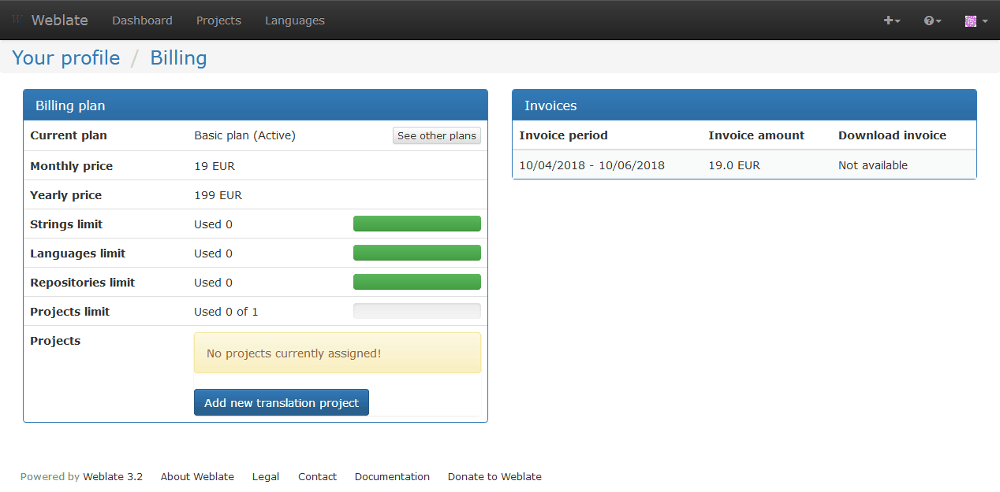
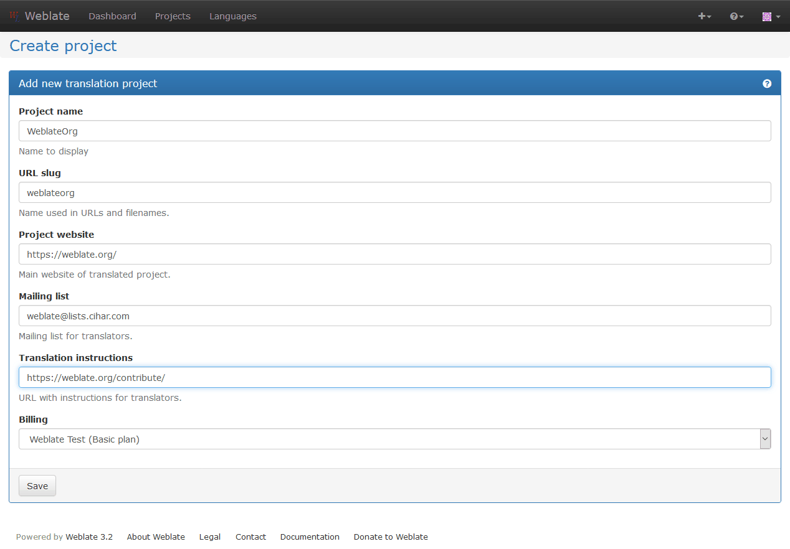
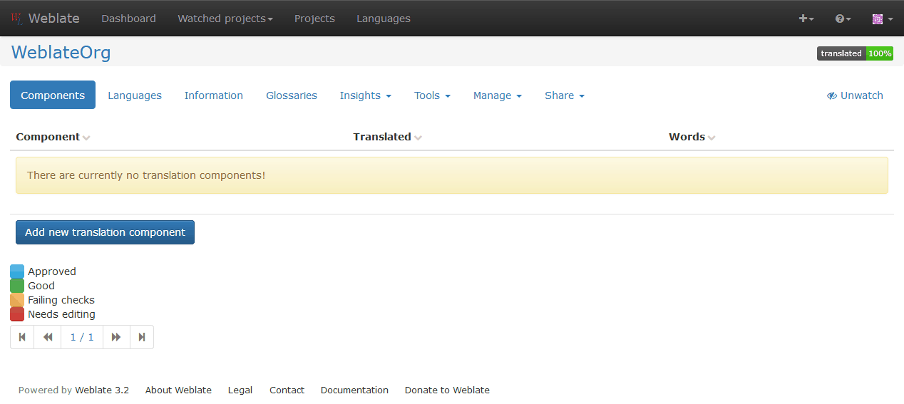
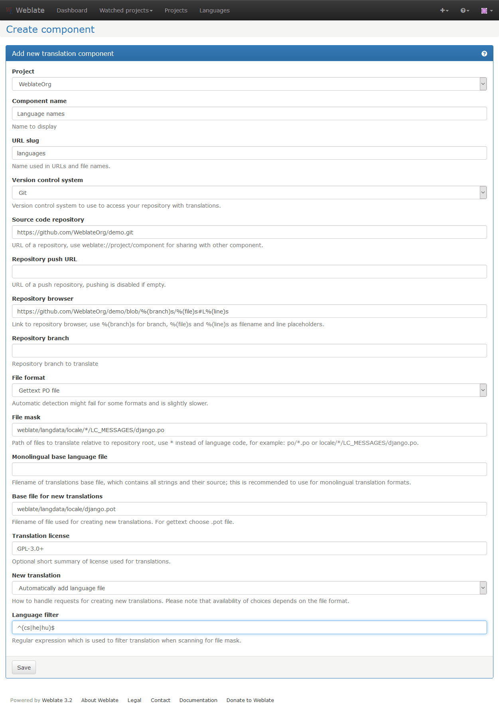

翻訳プロジェクト¶
翻訳の構成¶
Weblate では翻訳の対象をツリーのような構造に組織します。最上位の構成要素は プロジェクトの設定 です。これは例えば、アプリケーションやドキュメントのバージョン違いの翻訳など、同じ対象に属するすべての翻訳を保持します。次の階層には コンポーネント設定 があります。これが実際に翻訳対象となる部分です。使用する VCS レポジトリや、翻訳すべきファイルを決定するフィルタなどは、ここで定義します。コンポーネント設定 の下の階層に、個々の翻訳が位置します。ここでは コンポーネント設定 での定義によって VCS リポジトリから抽出されたファイルが、Weblate によって自動的に翻訳ファイルとして扱われます。
All translation components need to be available as VCS repositories and are organized as project/component structure.
Weblate supports wide range of translation formats (both bilingual and monolingual) supported by translate toolkit, see サポートするフォーマット for more information.
注釈
You can share cloned VCS repositories using Weblate internal URLs. Using shared repositories feature is highly recommended when you have many components that use the same VCS. It will improve performance and use less disk space.
翻訳プロジェクトとコンポーネントを追加する¶
バージョン 3.2 で変更: Since the 3.2 release the interface for adding projects and components is included in Weblate and no longer requires you to use Django 管理画面.
Based on your permissions, you can be able to create new translation projects and components in Weblate. It is always allowed for superusers and if your instance uses billing (eg. like https://hosted.weblate.org/, see Billing), you can also create those based on your plans allowance.
You can view your current billing plan on separate page:
The project creation can be initiated from there or using menu in navigation bar. All you need to do then is to fill in basic information about the translation project:
プロジェクトを作成することにより、プロジェクトのページに移動します。
ワンクリックで新しい翻訳コンポーネントの作成を開始できますので、今度は翻訳コンポーネントの情報を入力してください。
プロジェクトの設定¶
翻訳する新しいコンポーネントを追加するには、まず翻訳プロジェクトを作成する必要があります。プロジェクトは棚のようなもので、実際の翻訳がそこに収納されます。同一のプロジェクト内のすべてのコンポーネントは、提案と辞書を共有します。同時に翻訳も、コンポーネントの設定で無効にしない限り、同一プロジェクト内のすべてのコンポーネントで自動的に共有されます。
プロジェクトについて翻訳者に与えられる情報はごくわずかです。
- プロジェクトのウェブサイト
- 翻訳者がプロジェクトについてより進んだ情報を得ることのできるURLです。
- メーリングリスト
- 翻訳者が翻訳について討議したり意見を述べたりすることのできるメーリングリストです。
- 翻訳の手順
- 翻訳者が翻訳の手順などについてより詳細な指示を得ることのできるURLです。
- 翻訳チームのヘッダーの設定
- 翻訳チームのヘッダーをWeblateで扱うかどうかを設定します（この機能は今のところ GNU Gettext でのみ有効です）。
- 共有翻訳メモリの使用
- 共有翻訳メモリを使用するかどうかを設定します。詳しくは Shared translation memory を参照してください。
- Access control
- プロジェクトごとのアクセスコントロールを設定します。詳しくは Per project access control を参照してください。
- レビューの有効化
- レビューワークフローを有効にします。Dedicated reviewers を参照してください。
- フックの有効化
- このリポジトリに対して、認証されていない Notification hooks を有効にするかどうかを設定します。
- 原文の言語
- すべてのコンポーネントの原文で使用されている言語です。英語以外の言語から翻訳するときはここを変更してください。
注釈
ほとんどの記入フィールドは、プロジェクトの所有者もしくは管理者によって、Weblateのインターフェイスから編集することができます。
コンポーネント設定¶
コンポーネントは実際に翻訳する構成要素です。VCSレポジトリの場所と、どのファイルを翻訳すべきかのファイルマスクを入力すると、Weblateは自動的に VCS から取得し、マッチするすべての翻訳ファイルを見つけます。
典型的な設定例を サポートするフォーマット のセクションで見ることができます。
注釈
コンポーネントは適切なサイズに保つことをお勧めします。個々のアプリケーションやアドオン、本の各章や個々のウェブサイトなど、それぞれのケースに応じて意味のある基準で翻訳を分割してください。
Weblateは10000単位の翻訳を苦もなく処理できますが、そのような大規模な翻訳では、作業を分割し翻訳者間で調整することはより困難になります。また、一人の翻訳者があるコンポーネントの翻訳に取り組んでいる間、このコンポーネントの翻訳は他の翻訳者からは不可能になります。Translation locking を参照してください。
Should the language definition for translation be missing, an empty definition is created and named as "cs_CZ (generated)". You should adjust the definition and report this back to Weblate authors so that the missing language can be included in next release.
コンポーネントには、VCSを使用してそこから翻訳を取得するための、すべての重要なパラメータが含まれています。
- バージョンコントロールシステム
- 使用するVCSです。詳しくは バージョン管理の統合 を参照してください。
- ソースコードリポジトリ
変更を取得するために使用するVCSリポジトリです。より詳しくは Accessing repositories を参照してください。
これは実際のVCSのURLであることもできますし、そのリポジトリが他のコンポーネントと共有されるべきであることを示す、
weblate://project/componentであることもできます。より詳しくは Weblate internal URLs を参照してください。- リポジトリのプッシュURL
- プッシュの際に使われるリポジトリのURLです。これは完全にオプションです。ここを空欄にしておけば、プッシュのサポートは無効化されます。リポジトリのURLをどのように特定するかについてのより詳しい説明は、Accessing repositories を参照してください。
- リポジトリの閲覧
ソースファイルを閲覧するためのリポジトリのURL（そのメッセージが使われている場所）です。空欄であればこのリンクは生成されません。
以下の書式が使用可能です。
%(branchs)s- 現在のブランチ%(line)s- ファイル中の行%(file)s- ファイル名%(../file)s- 親ディレクトリのファイル名%(../../file)s- 親の親ディレクトリのファイル名
例えばGitHubなら、
https://github.com/WeblateOrg/hello/blob/%(branch)s/%(file)s#L%(line)sのように使うことができます。- 出力リポジトリのURL
- Weblateで行われた変更が出力されるリポジトリのURLです。これは 継続的トランスレーション を行わないとき、あるいは手動で変更をマージしなけれなならないときに重要です。これをGitリポジトリに対して自動化するためには、Git exporter を使うことができます。
- リポジトリのブランチ
- VCSからチェックアウトして翻訳を探すべきブランチです。
- ファイルマスク
翻訳すべきファイルのパスを示すマスクです。これは言語コードに置き換えられる * をひとつ含んでいなければなりません（これがどのように処理されるかについての情報は Language definitions を参照してください）。リポジトリに複数の翻訳ファイルがある場合（例えば複数のGettextドメインがある場合）は、それぞれ独立してコンポーネントを作成しなければなりません。
例としては
po/*.poやlocale/*/LC_MESSAGES/django.poなどといったようになります。ファイル名に
[や]などの特別な文字を含む場合は、これらは[[]や[]]のようにエスケープされなければなりません。- Monolingualベース言語ファイル
- Monolingual components のための言語定義を含んだベースファイルです。
- ベースファイルの編集
- Monolingual components のためのベースファイルを編集することを許可するかどうかを設定します。
- 新規翻訳のためのベースファイル
- 新規に翻訳ファイルを生成するためのベースとなるファイルです。例えばGettextにおいては
.potファイルがそれにあたります。より詳しい情報は Adding new translations を参照してください。 - ファイルフォーマット
- 翻訳ファイルのフォーマットです。サポートするフォーマット も参照してください。
- 原文のバグレポートのためのアドレス
- 原文のバグを報告するために使われるメールアドレスです。このメールアドレスは、Weblateにおいて原文に対して行われた、あらゆるコメントの通知を受け取るアドレスにもなります。
- 翻訳のロック
- ユーザによるアップデートが行われないよう、翻訳をロックすることができます。
- 翻訳の伝播の許可
同一プロジェクト内の他のコンポーネントの翻訳が、このコンポーネントに伝播し共有されることを、無効にすることができます。これは翻訳の内容に強く依存するもので、同じ言葉を用いることが望ましい場合もあります。
monolingual翻訳においては、プロジェクトの全体で同じメッセージIDを使っていない限りは、通常これを無効にするのが望ましいです。
- 翻訳履歴の保存
- データベースに翻訳の変更履歴を保存するかどうかを設定します。
- 提案の有効化
- このコンポーネントで翻訳の提案を受け入れるかどうかを設定します。
- 提案の投票
- 提案に対する投票を有効化します。提案の投票 を参照してください。
- 提案の自動受け入れ
- 投票された提案を自動で受け入れます。提案の投票 を参照してください。
- 翻訳フラグ
- 品質チェックやその他のWeblateの挙動をカスタマイズします。Customizing behavior を参照してください。
- 翻訳のライセンス
- この翻訳のライセンスです。
- ライセンスのURL
- ユーザがライセンスの全文を読むことのできるURLです。
- 新規言語
- 新規言語の作成のリクエストをどのように扱うかを設定します。ここでの選択肢はファイルフォーマットに依存することに注意してください。サポートするフォーマット を参照してください。
- マージのスタイル
- 上流リポジトリにおける変更をどのように扱うかを設定することができます。使用するVCSによってはこの設定はサポートされないかもしれません。より詳しくは マージあるいはリベース を参照してください。
- コミットメッセージ
- 翻訳をコミットする際に使われるメッセージです。Template markup を参照してください。
- コミッタの名前
- Weblateからコミットする際に使われるコミッタの名前です。常に実際の翻訳者の名前が使われます。使用するVCSによってはこの設定はサポートされないかもしれません。初期設定値は
DEFAULT_COMMITER_NAMEで変更することができます。 - コミッタのメールアドレス
- Weblateからコミットする際に使われるコミッタのメールアドレスです。常に実際の翻訳者のメールアドレスが使われます。使用するVCSによってはこの設定はサポートされないかもしれません。初期設定値は
DEFAULT_COMMITER_EMAILで変更することができます。 - コミット時のプッシュ
- コミットされたすべての変更を自動的に上流リポジトリにプッシュするかどうかを設定します。
- コミットすべき変更の経過時間
commit_pending管理コマンド（通常はcronにより実行されます）において、どの程度の時間までさかのぼって変更をコミットするかを設定します。初期設定値はCOMMIT_PENDING_HOURSで変更することができます。- 言語フィルタ
- ファイルマスクによりスキャンが行われる際に、翻訳を言語によってフィルタするための正規表現です。Weblateによって管理される言語のリストを限定するために使うことができます。例えば
^(cs|de|es)$とすると、ここに列挙された言語のみを含むようになります。ファイル名中で実際に使われている言語コードをリストアップする必要があることに注意してください。
注釈
ほとんどの記入フィールドは、プロジェクトの所有者もしくは管理者によって、Weblateのインターフェイスから編集することができます。
Template markup¶
Weblate uses simple markup language on several places where text rendering is needed. It is based on The Django template language so it can be quite powerful.
Currently it is used in:
- Commit message formatting, see コンポーネント設定
- Several addons
There are following variables available in the templates:
{{ language_code }}- Language code
{{ language_name }}- Language name
{{ component_name }}- Component name
{{ component_slug }}- Component slug
{{ project_name }}- Project name
{{ project_slug }}- Project slug
{{ url }}- Translation URL
{{ stats }}- Translation stats, this has further attributes, see below for examples.
{{ stats.all }}- Total strings count
{{ stats.fuzzy }}- Count of strings needing review
{{ stats.fuzzy_percent }}- Percent of strings needing review
{{ stats.translated }}- Translated strings count
{{ stats.translated_percent }}- Translated strings percent
{{ stats.allchecks }}- Number of strings with failing check
{{ stats.allchecks_percent }}- Percent of strings with failing check
{{ author }}- Author of current commit, available only in the commit scope.
You can combine them with filters:
{{ component|title }}
You can use conditions:
{% if stats.translated_percent > 80 %}Well translated!{% endif %}
There is additional tag available to replace chars:
{% replace component "-" " " %}
You can combine it with filters:
{% replace component|capfirst "-" " " %}
...and other Django template features.
Importing speed¶
Fetching VCS repository and importing translations to Weblate can be a lengthy process depending on size of your translations. Here are some tips to improve this situation:
Optimize configuration¶
The default configuration is useful for testing and debugging Weblate, while for production setup, you should do some adjustments. Many of them have quite a big impact on performance. Please check Production setup for more details, especially:
Check resource limits¶
If you are importing huge translations or repositories, you might be hit by resource limits of your server.
- check amount of free memory, having translation files by system will greatly improve performance
- disk operations might be bottleneck if there is lot of strings to process - the disk is pushed by both Weblate and database
- additional CPU cores might help to improve performance of background tasks (see Background tasks using Celery)
Disable not needed checks¶
Some quality checks can be quite expensive and if you don't need them, they
can save you some time during import. See CHECK_LIST for more
information how to configure this.
Automatic creation of components¶
In case you have project with dozen of translation files (eg. for different
Gettext domains or parts of Android apps), you might want to import them
automatically. This can be either achieved from command line using
import_project or import_json or by installing
Component discovery addon.
For using the addon, you need to first create component for one translation file (choose the one that is least likely to be renamed or removed in future) and install the addon on this component.
For the management commands, you need to create a project which will contain all
components and then it's just a matter of running import_project or
import_json.
Fulltext search¶
Fulltext search is based on Whoosh. It is processed in background if Celery is configured. This leads to a faster response of the site and less fragmented index with the cost that it might be slightly outdated.